Ceramics & Studio Practice
Time and transformation in fired clay — objects shaped by chemistry, labor, and the conditions of their making.
View Work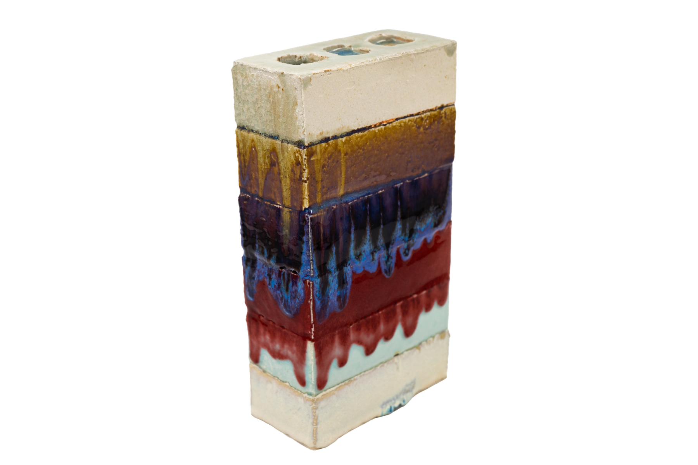
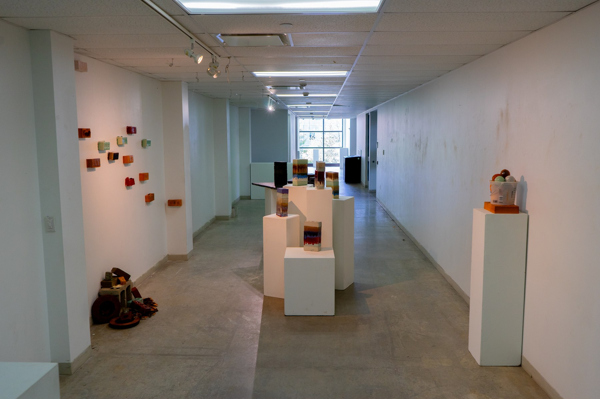
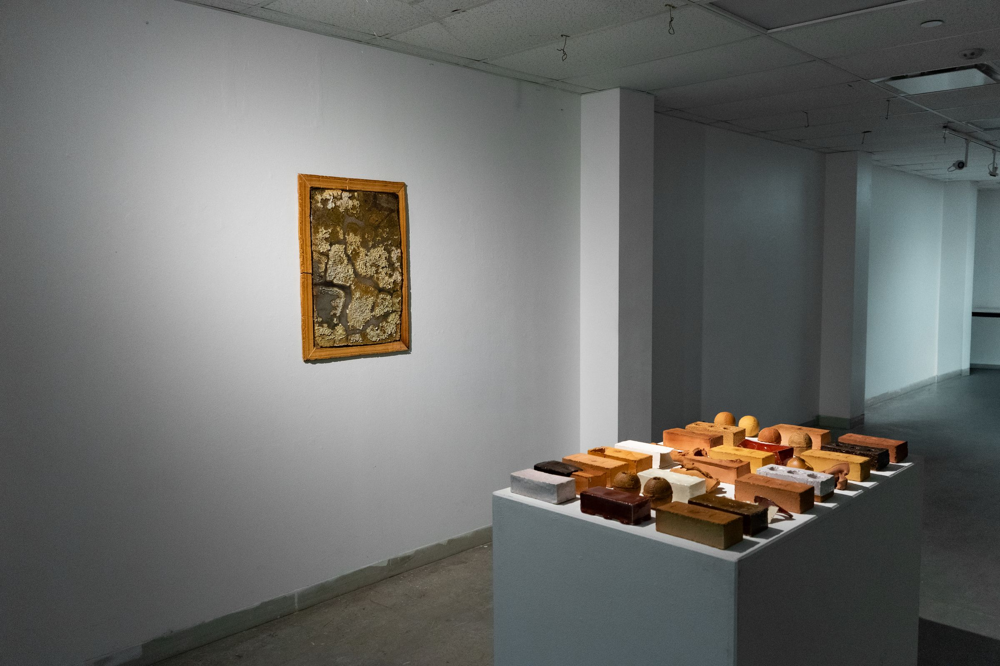
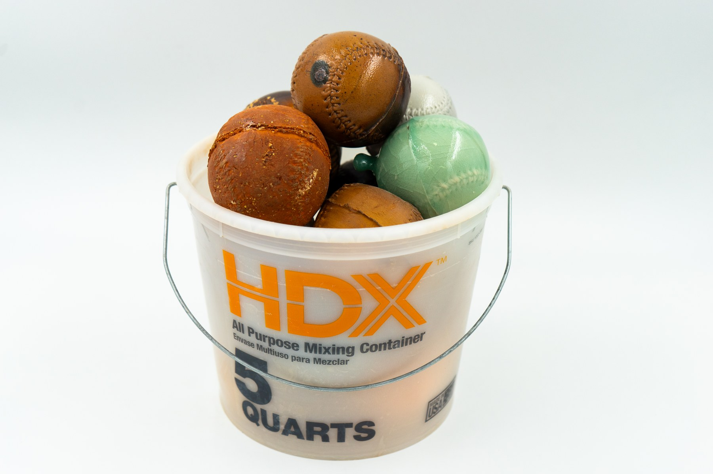
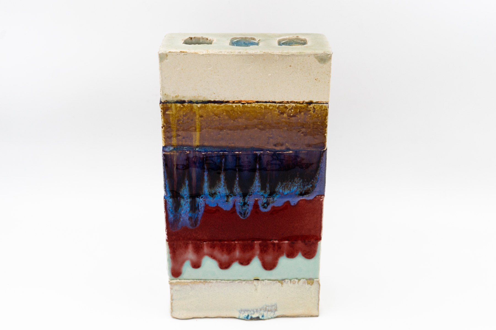
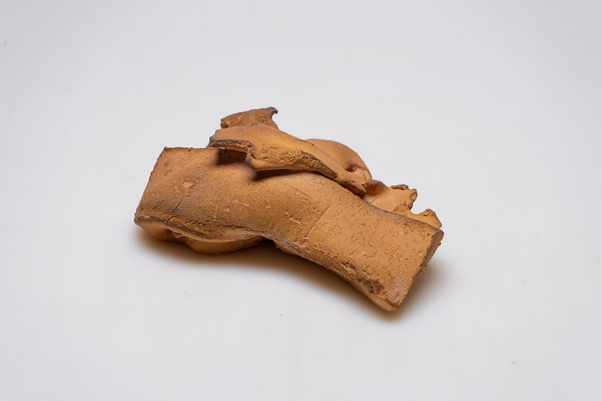
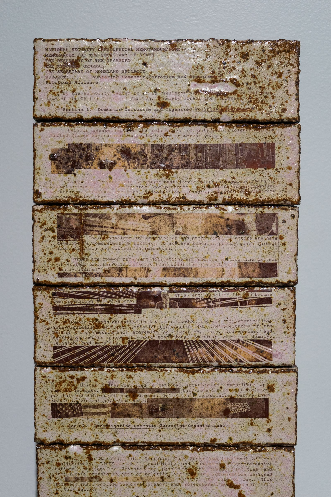
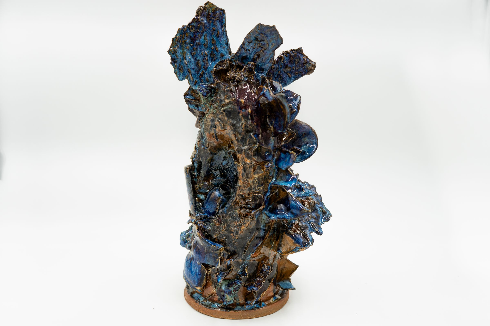
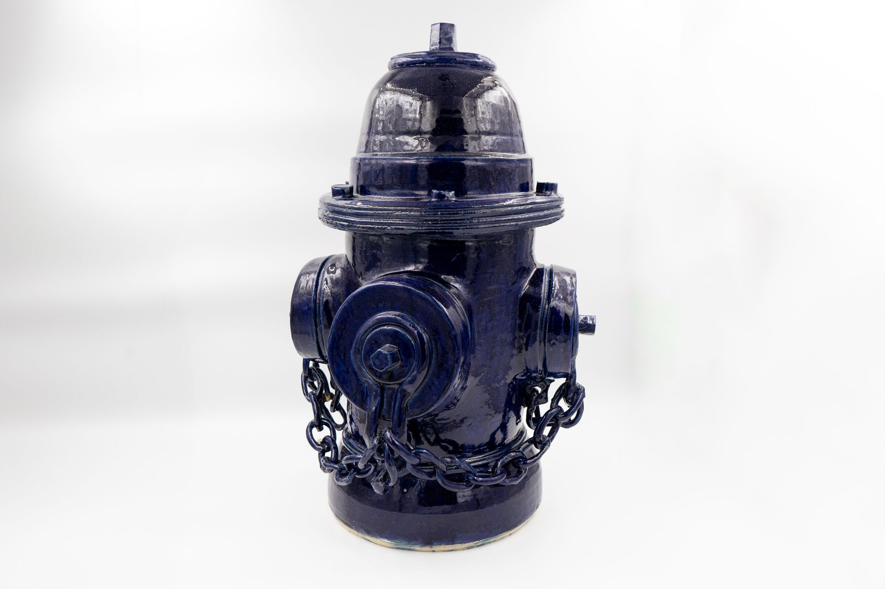
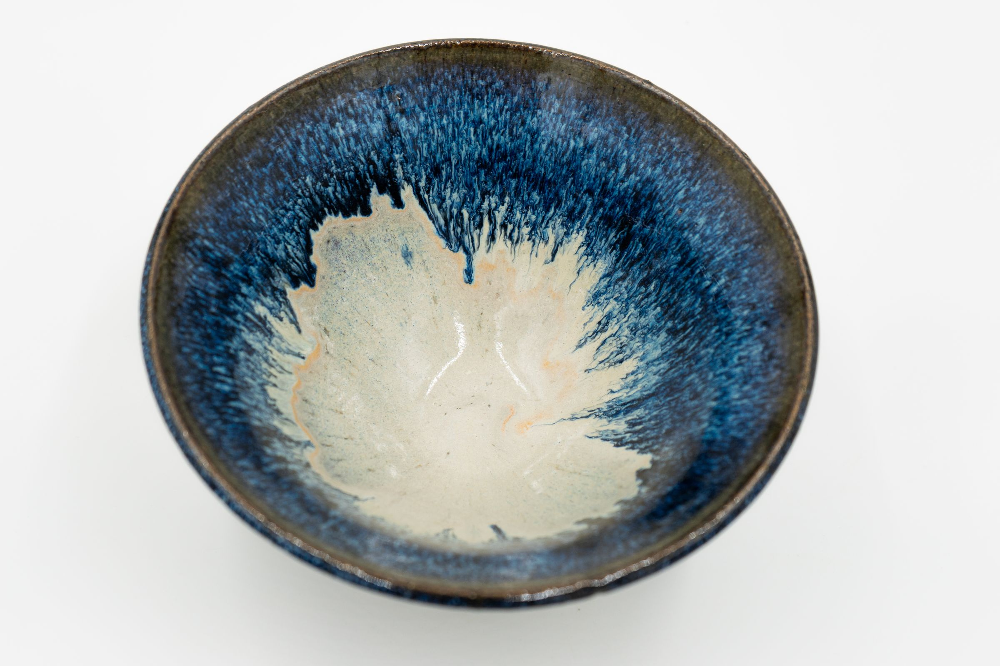
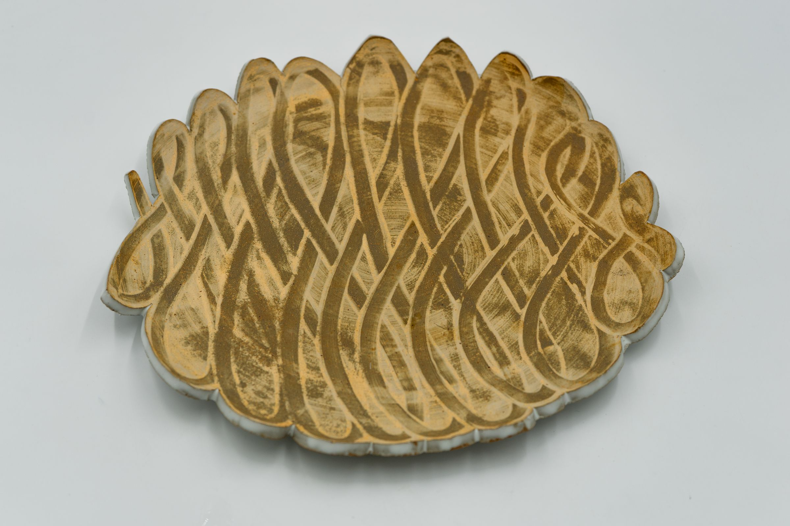
The same material that makes a cup makes a brick. What changes is the question.
My practice is organized around a small set of objects — bricks, baseballs, vessels — and the questions they raise about labor, familiarity, and what happens when a culturally loaded form is translated into a slow and resistant material.
The brick occupies a peculiar position among commodities: it is everybody's object, and nobody's. Its status as an object of labor remains legible — it exists in the cultural imagination not as a neutral commodity but as crystallized working-class labor. Coating it in glaze does not neutralize this. It adds another layer: the labor of construction, the fragility of fired stoneware, the color that signals completion. A glazed brick is a brick that has been told it's art. Whether that claim holds is the work's question.
The stacks are an accumulation of days. Each brick that comes out of the kiln is evidence that a day occurred — a record of having arrived, following the process, staying in the studio until the cast was ready to open. The making is machinic, and the machine is me. The question they eventually surface is not conceptual but arithmetic: why does my existence not add up to more than five?
The baseball indexes leisure where the brick indexes labor — the same hand, a different gesture. The most generative moments are where material exceeds its manufactured limits, where porcelain buckles and stacks shift past what they were designed to hold. That is not failure. It is where the material is most honestly itself.